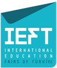

48. IEFT / EKİM 2026'NIN ARDINDAN
FUAR SONRASI
ÖZEL DOSYA
ÖZEL DOSYA

IEFT
BİTTİ.
FIRSATLAR
BİTMEDİ.
Dünyanın en iyi üniversiteleri, güçlü burslar ve yeni eğitim rotaları Asya'da.
6 Asya üniversitesi,
dünyanın ilk 20'sinde.
dünyanın ilk 20'sinde.
QS 2027 · 01 / 06